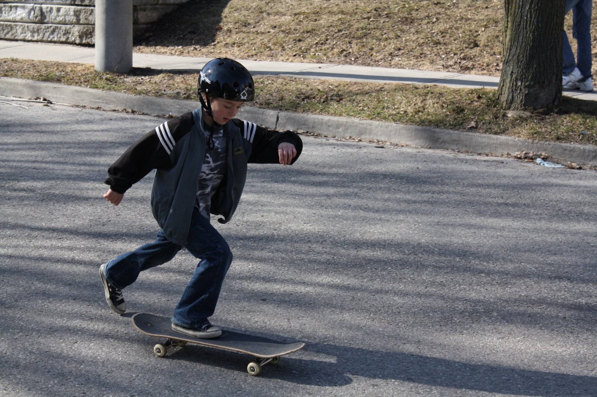
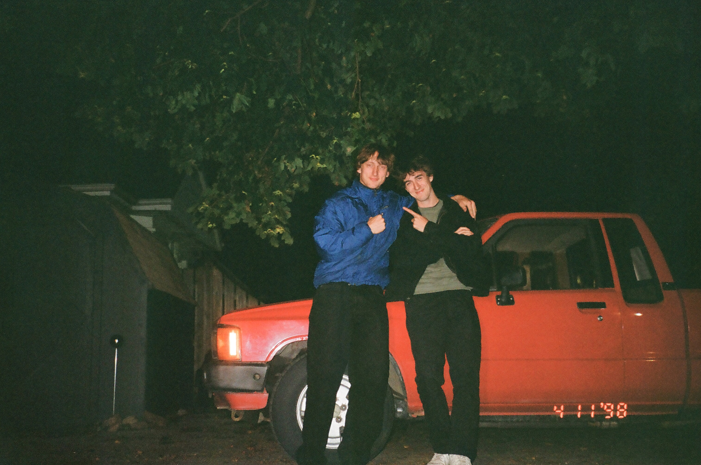
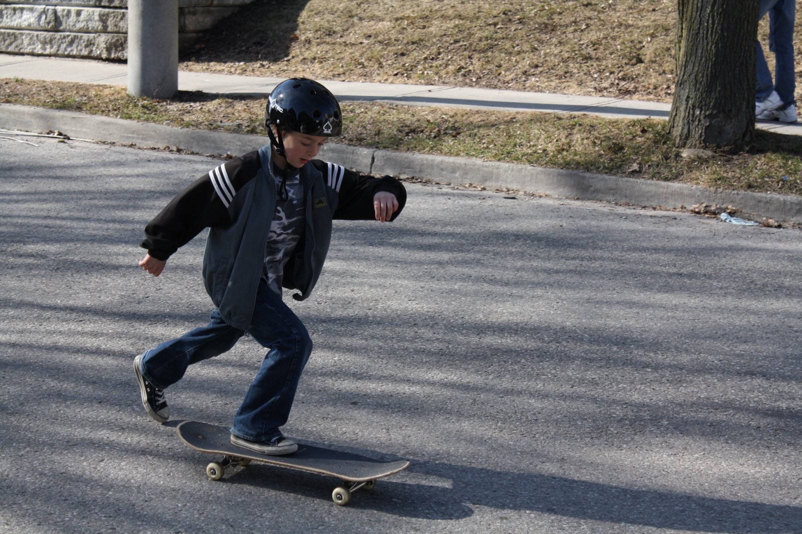
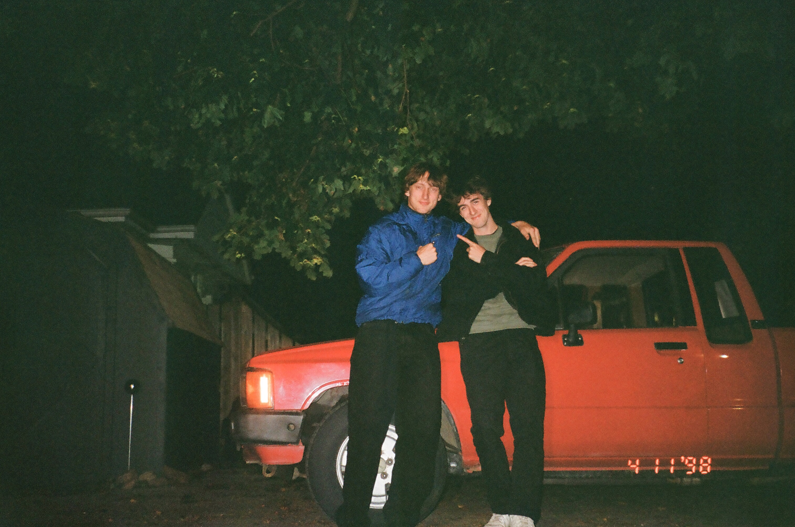

Hello There!
This is a place where you can learn about my experiences in ITEC as well as some background
on my personal life, and even my contact information. I will be continually updating this site
to reflect my current work and school status so stay tuned.
To view some coding projects I have created in the past, check out my Projects page
To view my personal blog that I will continually update, check out my Blog page
If you would like to get in touch with me, head over to my Contact page
Here is just some basic information about me, but more can be found on my About me page
Name: Nigel Andrews
Pronouns: He/Him
Major: Bachelor of Arts in Information Technology
 


